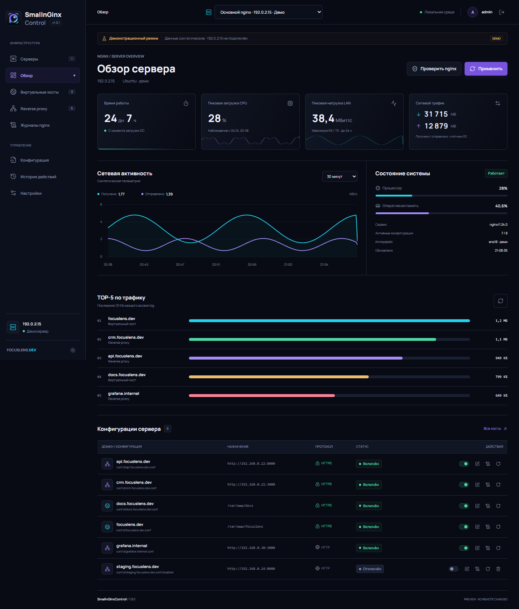
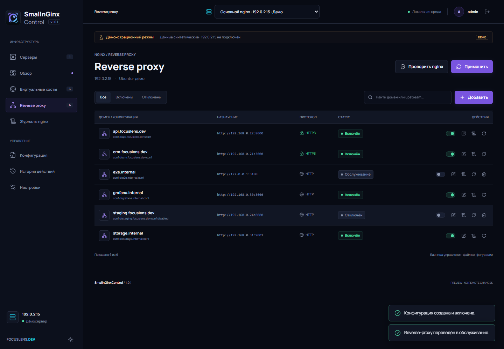
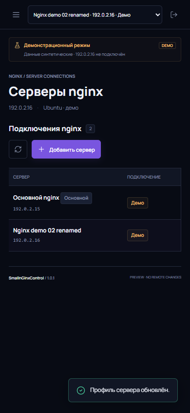

Логи каждого vhost
Active и disabled host configs получают отдельный `/var/log/nginx/<host>-data.log`.
Per-host access logs, настраиваемое хранение и TOP-5 по bytes-sent для выбранного nginx-сервера.

TOP-5 активных виртуальных хостов, отсортированных по отданным байтам access log.
Active и disabled host configs получают отдельный `/var/log/nginx/<host>-data.log`.
Срок хранения от 1 до 3650 дней задаётся в Settings; cleanup запускается ежедневным systemd timer.
Горизонтальные полосы ранжируют активные vhost по access-log bytes-sent.

Обратимый maintenance-mode

Multi-server на мобильном экране
55 backend tests · 7 Playwright E2E
systemd active · HTTPS 200 · nginx -t successful
TOP-5 считает распознаваемый status/bytes field из последних 128 KiB каждого access log. Это sampled log traffic, не точный интерфейсный RX/TX за фиксированный временной интервал.
Установка: git clone deployment guide · GitHub release v1.0.1